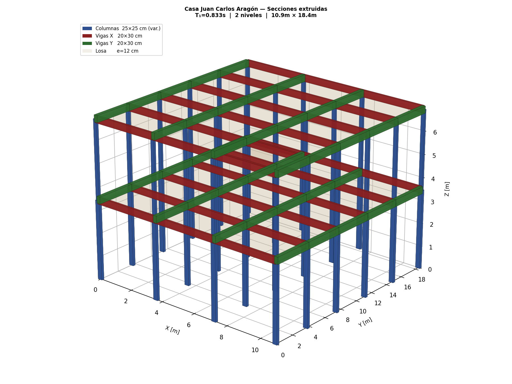

Cómo trabajamos
Del modelo al detalle
Análisis asistido por computadora, verificable de principio a fin
- ModelamosSe construye el modelo 3D de la estructura con su geometría, cargas y sismo (espectro CFE).
- AnalizamosAnálisis estático y modal-espectral; se obtienen periodos, cortantes, derivas y solicitaciones.
- VerificamosDiseño conforme a NTC y entrega de la memoria de cálculo con el visor 3D para comprobar cada resultado.